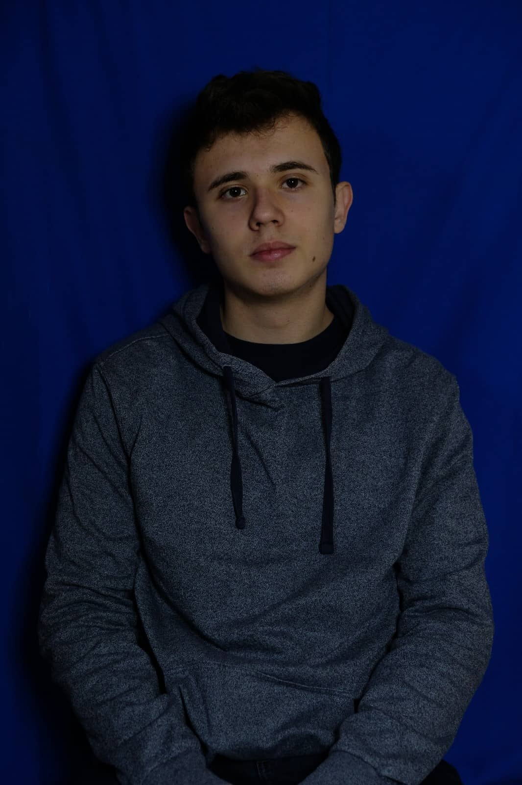

Matteo Plišić
O meni

Rođen sam 4.1.2002. u Puli gdje završavam osnovnu školu
nakon
koje upisujem Opću gimnaziju te istu završavam 2020. godine. Zatim
upisujem Tehnički fakultet Sveučilišta u Rijeci: smjer Preddiplomski
sveučilišni studij Računarstva gdje sam trenutno na 2. godini
studija. Tečno govorim engleski jezik te talijanski jezik na
osnovnoj razini.
Obrazovanje
Vještine
- C
- Java
- PostreSQL
- HTML
- CSS
- Git
- Linux
Iskustvo
- Demonstrator (Student assistant) na Tehničkom Fakultetu u
Rijeci:
Programiranje 1 (programiranje u C-u)
Listopad, 2021. - Veljača, 2022.
- Stručna praksa u Asseco SEE, mentor Matija Ječmenjak:
Postavljanje linux okruženja za instalaciju(aplikacijski i proxy
poslužitelj) i konfiguraciju Quarkus Java
aplikacije. Kreiranje java aplikacije za čitanje, dodavanje,
brisanje i
modificiranje korisnika iz baze podataka, ulogiravanje u aplikaciju
i
postavljanje baze podataka.
Svibanj, 2022. - Srpanj, 2022.